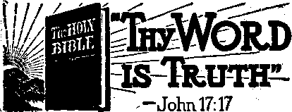

In Brief
Courts Halt Nation’s Greatest Blunder
Malice in the State of Washington
Abusing Christians; Glorifying Crime
But Where Does Babylon Come Inf
Kingdom Halls of Jehovah’s witnesses
“Thy Word Is Truth”
A Capable Chemist Gets a Rotten Deal
Some Ups and Downs on the Farm
Presenting “This Gospel' of the Kingdom”
Growth of the Canon of the Hebrew and
Published every other Wednesday by
WATCHTOWER BIBLE AND TRACT SOCIETY, INC.
117 Adams BL, Brooklyn 1, N. Y., U. S. A.
OFFICERS
President N. H. Knorr
Secretary W. EL Van Amburgh
Editor Clayton J. Woodworth
Five Cents a Copy
$1 a year in the United States 11.25 to Canada and all other countries
NOTICE TO SUBSCRIBERS
Remittancess For your own safety, remit by postal or express money order. When coin or currency Is lost in the ordinary mails, there is no redress. Remittances from countries other than those named below may be made to the Brooklyn office, but only by International postal money order.
Receipt of a new or renewal subscription will be acknowledged only when requested. Notice of Expiration is sent with the journal one month before subscription expires. Please renew promptly to avoid los& of copies. Send chance of address direct to us rather than to the post office. Your request should reach us at least two weeks before the date of issue with which it is to take effect. Send your old as well as the new address. Copies will not be forwarded by the post office to your new address unless extra postage is provided by you.
Published also In Greek, Portuguese, Spanish, and Ukrainian.
OFFICES FOR OTHER COUNTRIES
England Si Craven Terrace, London, W, 2
Australia 7 Beresford Road, Strathfield, N. S. W, South Africa 622 Boston House, Cape Town
Mexico Calaada de Melchor Ocampo 71, Mexico. I?. F. Brazil Caixa Postal 1319, Rio de Janeiro
Argentina Calle Honduras 5646-48, Buenos Aires
Entered aa second-class matter at Brooklyn, N. Y.,
‘ under the Act of March 8, 1879.
Disappeared in a Hurry
♦ In a certain, issue of the New York Daily News, Friday, May 19, 1944, there appeared on pages 22 and 23 nine pictures. Four of these, all apparently taken (By Acme), and three of them so marked, were of scenes in Berlin showing the effects of the bombings. One, entitled “Jittery Joe”, is said to have been withdrawn in a hurry, and, if you look at the reproduction herewith, you can readily see why. It is all right, in Germany, for the people to see gentlemen with their collars on backwards standing on either side of Joe Goebbels, to give him “spiritual” comfort in his diabolical work, but any fool would know that such pictures if published in America would certainly be displeasing to Hitler’s friend, Pacelli. And so they disappeared in a hurry. They told the truth, to be sure, but it interferes with the Hierarchy’s fairy story that they are being persecuted in Germany.
Daily ntws. f
JITTERY JOE. Propaganda Minister Goebbels casts “an uneasy eye skyward as Allied planes come in for attack on Berlin. Repeated attacks on Ge ma ncapital have had devastating effect on nerves of the people. With death and destruction all around them, this trio has reason to be uneasy.
“And in His name shall the nations hope.”—-Matthew 12:21, A.R.V.
Volume XXV Brooklyn, N. Y., Wednesday, July 5, 1944 Number G47
Malice in Blunderland
Courts Halt Nation’s Greatest Blunder
OR many years people have said that “truth is stranger than fiction”, but we never expected to find a story stranger than the adventures of Alice in the mythical land “through the looking glass” created by Lewis Carroll in his famous book, Alice in Wonderland. As strange as it seems, however, certain things happening in the real land on this side of the looking glass (which might appropriately be called blunderland) are. much more unusual than the sights that Alice saw on the other side of the looking glass where everything happened backwards.
None of the peculiar characters that Alice saw even compared in absurdity to the “backwards truant officer” of our real-life “blunderland” who takes studious pupils out of their classrooms instead of putting truants in. Nor did she see anything so completely ridiculous as the "backwards judge” who takes little children from their parents and puts them in reform institutions because their loving parents teach them to be obedient to their Creator, Almighty God. And more than likely even the odd characters in the fictional 'land through the looking glass’ would be amazed at,the “backwards patriots” of “blunderland” who advocate the destruction of the Bill of Rights and defiance of their own government which they profess to serve. The ridiculous blunders of these queer characters would undoubtedly be tremendously amusing if they were only part of a fantastic dream; but their very real presence removes all traces of amusement, for the past eight years has sickened the heart of freedom-loving citizens. This article is well named “Malice in Blunderland”.
The truant officer is a familiar character in every community. Many a small boy who planned a day’s fishing trip instead of going to school has found himself being led by the ear into his seat in the schoolroom by the village truant officer; which, of course, is what this officer is paid to do.
But imagine the surprise of the good citizens of Upper Chichester township, Pennsylvania, last year when they saw their local truant officer (who also serves as chief of police and dog-catcher) stalk out of the schoolhouse leading two resolute-looking youngsters, put them in his official canine transport, and rumble away. The next day the same thing happened. At first some thought that this erstwhile nemesis of the truants had been reading his duties backwards out of the book with a mirror, but after a few days the facts of the matter finally became known. It seems that these two youngsters, Dolores Conte, age 8, and her brother James Conte, age 10, both model pupils in the township school, had refused to participate in the compulsory flag-salute ceremonies conducted at the school every morning. Both children had explained at great length to their teachers that for them to participate in the flag-salute exercises would mean that they would not have life on earth under God’s kingdom rule. Numerous threats were made against the children and their parents, and finally, after it appeared that the children would not compromise their position, they were expelled and sent home. The parents promptly filed petitions for reinstatement and sent the children back to school, whereupon they were speedily sent back home. This unusual procedure was repeated every day for several weeks, during which time the children began to fall behind their classes.
Then one day, after his teacher had ordered him to put his books away and go on home, James politely but firmly advised the teacher that he had a right to an education and that he was going to stay in his class and get it. This precipitated the calling of an emergency session of the school board and forthwith a local court official was dispatched to the school to remove James and his little sister from their classes. The children went with him without argument, but the next morning they were back at their desks, whereupon the official was called out again and the whole performance repeated. After a few mornings of this, the court official, worn out with this extrajudicial duty, put the case in the hands of the truant officer, who for the next thirty days, as astounding as it may seem, each day removed these two children from their classes, thus forcing them to be truants, and thereby qualifying himself as the world’s most unusual truant officer.
Shocked at the habitual truancy of these children, provincial citizens of the township began agitating for 'something to be done’ for the education of the youngsters. Accordingly, a summons was served on Vincent Conte, the children’s father, charging him with violating the peace and dignity of the Commonwealth of Pennsylvania by failing to keep his children in attendance at school. A quick "trial” was held before the justice of the peace. A conviction resulted, and an appeal was taken to the Court of Quarter Sessions, presided over by A. D. McDade, who also officiates as the “Commander of Bradbury Camp No. 149 of the Sons of Union Veterans of the Civil War”, a purportedly patriotic organization. Another trial was held, and the judge reserved his decision to ponder on the issues involved.
While the judge was holding these issues under advisement, the Supreme Court of the United States announced its opinion in the famous West Virginia “flag salute case” holding that children could not be constitutionally expelled from the public schools for refusing to salute the. flag if it violated their consciences. Whatever effect this decision might have had on the august assembly of the “Sons of Union Veterans" is not known, but the commander thereof, in his best juristic phraseology, promptly decided the Conte ease and published to the world that a mere decision of the Supreme Court of the United States would not be enough in his court to establish the guiltlessness of a father who would encourage his children to obey the laws of God rather than the commands of their schoolteacher. Soaring into the heights of dramatic eloquence, the judge, in a frenzy, pointed out that he was right and the Supreme Court was wrong, and to prove it he relied upon the national anthem, which he quoted in full, besides several excerpts from “The Man Without a Country” and other patriotic declamations.
The unanimous applause from the “Sons of Union Veterans” was spontaneous. A formal resolution was immedi-ately adopted and published praising the judicial integrity of the judge for “the faithful performance of this portion of his judicial duties in 'standing by his guns’ despite the previous decision of the United States Supreme Court.”
We here go on record as doubting that anyone ever published a more masterful declaration of reverse patriotism than
appears in the sentence last quoted. But be that as it may, the case was appealed, and the Superior Court of Pennsylvania did not agree that the rousing strains of “The Star-Spangled Banner” were . any authority for overruling the Supreme Court of the United States, and ordered the defendant acquitted, much to the chagrin of the disgruntled persecutors. !
This would have been sufficient rebuke for honest-hearted persons desirous of enforcing and upholding the law, but the self-styled patriots had no such purpose. Instead of publicly admitting their atrocious error in unlawfully depriving innocent children of the education to which they were entitled, they have announced their intention of presenting the case to the Supreme Court of the United States for review, thereby attempting to secure another reversal of the flag salute case. Under the circumstances, it is very unlikely that the Supremd Court will even allow the petition for review, but, nevertheless, while their petition is pending, the selfstyled patriots are enthusiastically planning a new and greater program of persecution. The Supreme Court, now in summer vacation, will not rule on the petition until it reconvenes next fall.
Professors of government who never heard of the “hoot and holler” method of government would do well to study the political process of the little town of Rockvale, Colo., the population of which is reputed to be 90 percent Roman Catholic. Most citizens know that the Constitution rules supreme in American democracy, but this theory of government apparently was a little slow in reaching certain citizens at Rockvale, as demonstrated by the unique process by which the school board handled the flag salute issue.
In September of 1940 a teacher expelled six children from school for their refusal to participate in the compulsory flag salute ceremonies. The parents petitioned the board to reinstate them, and a public hearing on the matter was called. A great number of the population of the town turned out to the hearing, which began with a statement by the schoolteacher involved. Then the father of three of the expelled children, one of Jehovah's witnesses and a veteran of the last world war, addressed the chairman and began to state his reasons for petitioning the school board to reinstate the children, but his statement was interrupted by an alcoholic and excited voice from the rear demanding all to listen to him read a denunciation of Jehovah’s witnesses published in the Elks Magazine. The article was read and uproariously applauded, whereupon the children’s father began again to present his petition, only to be heckled and jeered as he made his appeal for law, order and reason. Then, in much the same manner as the Roman emperor called to the blood-crazed crowds at the gladiatorial contests to turn thumbs up or down on the life of the losing gladiator, the chairman of the meeting cried out to the crowd, “What is your decision?” Someone shouted, “Uphold the school board I” Hooting and screaming to the top of their lungs, the mob roared its approval, at the. same time stomping on the floor and wildly beating their hands together. That ended the matter, and the persecution campaign was off to a good start.
Unwilling to believe, however, that the great liberties guaranteed by the Constitution could thus be summarily hooted out of existence by a frenzied mob, the parents immediately instituted . a suit in court to compel the school board to reinstate the children. Rising to tfoe emergency of the occasion, the local post of the American Legion quickly drew, up a lengthy declaration, and rushed it to the local newspaper, where it was printed in a boxed space three columns wide in boldface type under scare headlines as an “appeal to every patriotic citizen”. The Legion
denounced the action of the parents in resorting to the courts for the preservation of liberty as “un-American and antiAmerican acts and demonstrations” and called upon all citizens and organizations to adopt and publish like resolutions to fee end that Jehovah’s witnesses might ‘Understand that they are not wanted in Fremont county”. Several other so-called “patriotic” organizations were ■ glad to ape this action, and as a result the case against the school board drew widespread attention.
Unfortunately, the legal battle in the courts proceeded slowly, and the case was not finally decided by the Supreme Court of Colorado until March 27, 1944. But however slow it might have been, the well-considered judgment of the court was nonetheless explicit in its wording and showed that those selfstyled “patriotic organizations” who were so quick to denounce others as “anti-American” were themselves the ones subversive of the peoples’ liberties. This trouncing administered by, the highest court of Colorado will long be remembered as a real lesson in democratic process.
The court’s opinion, titled as Zavilla v. Masse, brushed aside the several arguments advanced by the school board one after the other:
... if there was no authority in the [school] board to make the [flag salute] rule, any effect, any incidental destruction of the morale of other pupils or ineffectiveness in the exercise of saluting the flag as a method of instruction in patriotism arising from plaintiffs’ [Jehovah’s witnesses] refusal to comply, is not to be attributed to the breach of the rule but to the exercise of unwarranted authority by the board in making the rule.
We assume that the salute is enjoined, as counsel for the board state, ‘for the purpose of engendering in the youthful mind, a love of country, respect for its institutions and for constituted authority.’ We think this is its purpose and that it was adopted as a method or means to teach patriotism and has and can have no other purpose in a school curriculum. Even so, it is not the only means of accomplishing that end. Before a compulsory salute was ever thought of for our public schools, countless-thousands of our citizens, under the promptings of patriotism, offered their services to their country and thousands of them died on the battlefields of the wars in which it has engaged. No compulsory salute was necessary as a means of teaching them patriotism. . . .
Is involuntary compulsory compliance with a rule requiring the flag salute as a means of teaching respect for our country and its institutions and the inculcation of a spirit of patriotism, of such efficacy or compelling necessity that we should say, as a matter of law, that it is necessary for the peace, good order and safety of the state? . . .
It is not, as we believe, a trespass on the legislative function that enacts or authorizes the promulgation of a rule having such an effect, admittedly establishing a method or means only of attaining an objective that can and has been otherwise attained, to declare that such rule is an unwarranted invasion of the constitutional guarantee of liberty and the guarantee against the deprivation of civil rights and privileges by reason of one’s opinion concerning religion, and to hold that as to these plaintiffs the rule is not enforceable.
The American flag hangs in every courtroom of consequence in the land as a symbol of freedom, toleration and justice. Every judge is sworn to uphold and defend the great principles for which that flag stands. But in spite of the solemnity of the oaths, a few judges occasionally get out of line and run contrary to their obligations under the law, making it necessary for the higher courts to correct them. It is not very often, however, that a judge so flagrantly and openly violates the rudimentary principles of the constitution, and does it in the name of the flag, as did Ralph Smythe, judge of the Superior Court for Clallam County, Washington.
Certain intolerants in Clallam county caused legal process to be served on three families in the county ordering them to appear । the very next day in court to “show cause” why the children in these families should not be taken away from their parents and put into an institution that would ‘train’ their consciences into obedience. The only reason assigned for this drastic action was that the children had been expelled from school because of their refusal to salute the flag. When the case was called, the parents asked for a continuance of proceedings to allow them opportunity to secure legal counsel, but, since the judge did not see the necessity for going through the usual formalities of a trial, their request was denied. Instead, after a few legal incomprehensibilities, the judge began to declare his uncomplimentary opinion of Jehovah’s witnesses. To demonstrate his supreme contempt for their faith, he ordered that the four children of Mr. and Mrs. Edward Bolling should be taken away from their parents and put in custody of a person who “promised to see to it” that they saluted the flag. The other three families were given a six-day ultimatum to have their children back in school saluting the flag on pain of the same penalty.
An appeal was immediately taken to the supreme court of the state. Then, in due course, the Supreme Court of Washington delivered its opinion, a stinging rebuke to those who robe themselves in the folds of the flag and, cloaked by this very emblem of freedom, seek to destroy the principles for which the emblem stands. Said the court:
Of course, many people pay lip service to our national ensign, who have in their hearts no reverence for the flag or for the principles for which it stands. . . . Too often in times past persons in authority, who were sincerely convinced that they knew and believed the truth, have felt themselves justified in persecuting persons holding different opinions, believing that the truth should avail itself of all means at its disposal, including the strength of the secular arm, in order to enforce belief or at least conformity. . . . The sectioh of the code . . . which requires school children to repeat the form of words constituting the salute to the flag, as set forth in the law, may not be enforced as against the children of the petitioners in these proceedings.
The courage and judicial integrity manifested by this statement can be even more keenly appreciated when it is considered that this decision was made six months before the Supreme Court of the United States in the Barnette case from West Virginia ruled, that the compulsory flag salute was unconstitutional.
Just at the time when all the foregoing was taking place, in another part of the state of Washington, a mother, one of Jehovah’s witnesses, was embroiled in a divorce proceeding. Her husband, who was bitterly opposed to Jehovah God’s law and Word, contended that she was not entitled to the custody of their five children for the reason that she taught them “not to salute the flag and other disloyal and un-American practices”. The trial judge, apparently beguiled by this base lie, ruling sternly against this , Christian mother, decreed, “ . . . plaintiff is a fit and proper person morally to have the custody and control of the minor children, but she is a member of a fanatical organization with teachings inimical to the rearing of children as American citizens; that for this reason only she is not a fit and proper person to have the custody and control of the minor children.’' And with that, she was deprived of' the custody and control of all the children as well as all the property belonging to the family.
The case was appealed to the Supreme Court of Washington, where the decree of the lower court was completely reversed, principally upon the basis of the decision of the Texas Court of Civil Appeals in the case of Reynolds v. Rayhorn, decided in 1938. In that case
a father, one of Jehovah’s witnesses, had been deprived of the custody of his little girl on the grounds that the teachings of Jehovah’s witnesses were of “such a character that the child should not be reared under such an influence". Quoting from this Texas decision, the Washing-1 ton Supreme Court said:
“The flag is emblematic of the justice, greatness and power of the United States—these, together, guarantee the political liberty of the citizen, but the flag is no less symbolic of the justice, greatness and power of our country when they guarantee to the citizen freedom of conscience in religion—the right to worship ills God according to the dictates of his conscience. , . . However much we may disagree with or disapprove their religious belief, the failure of appellant, because financially unable to supply greater comfort and pleasure for his daughter, together with their refusal to salute the flag, do not constitute a sufficient cause to adjudge the father disqualified and unfitted to have the care, custody and control of his minor daughter.” We think the reasoning of the above case applicable here.
We do not doubt the right of the state to suppress religious practices dangerous to morals, and presumably those also which are inimical to public safety, health and good order, but so far as appears from the testimony in this case, the teachings of Jehovah’s witnesses cannot, in our opinion, be classed in any one of these categories.
We cannot find in the record any testimony which would justify the court in finding that this mother is unfit to have the care and custody of her children, because of her religious beliefs, or that the children, if left with her, will be reared in an atmosphere of disloyalty to their country or its institutions.
The fires of persecution over the flag salute issue have burned hotter in Oklahoma, perhaps, than in any other state. At the time the Supreme Court upset the compulsory flag salute requirement, four different cases were pending before the Criminal Court of Appeals of Oklahoma, involving in one way or another the validity of the compulsory flag salute regulations.
In one case, a mother was charged with “unlawfully hindering and forbidding the carrying out of the ceremonial for saluting the American flag formulated according to law by the state superintendent of public instruction”, because she dared present a petition to the board of education asking that her seven-year-old daughter be excused from participation in the flag-salute ceremonial. She was convicted and sentenced to serve sixty days in the county jail.
, In another case, two members of the Woods county school board, both of whom were Jehovah's witnesses, were charged with having committed the same offense because they voted to reinstate in school several children that had been expelled for failure to participate in the flag ceremonies. Both of them were convicted and sentenced to pay a fine of $150 each. And while all of this was going on, the children in question were being deprived of an education; so the Christian parents of the children arranged for them to attend a private “Kingdom School”. Promptly, the officials arrested the teacher of that school for her failure to enforce the flag salute regulation promulgated by the state superintendent of public instruction. She was convicted and sentenced to pay $250 and court costs.
In a fourth case, a man was charged with the crime of having “contributed to the delinquency of a minor” because he “did aid and abet and encourage said child [his 12-year-old daughter] to not participate in the flag ceremonial”. He was convicted and fined $250 and court costs.
It appeared for a while that liberty had indeed come to an end in Oklahoma. But even while new and varied prosecutions were being formulated by the enemies of freedom, the Oklahoma Criminal Court of Appeals made short shrift of all four cases, ruling that the compulsory flag salute requirement was unconstitutional. The court, adhering to the decision of the Supreme Court of the United States in the West Virginia flag-salute case, declared that this opinion was “sound in principle and consonant with constitutional provisions”. When the newspapers in Oklahoma announced this judicial declaration the disappointed persecutors loudly proclaimed their disapproval and consternation, but not loud enough to conceal the obvious truth: that they had perpetrated one of the greatest legal bungles in the history of the state.
On July 3, 1943, one day before the nation celebrated its 167th anniversary of independence, the Supreme Court of South Dakota reversed a judgment of conviction entered against Mr. C. R. Davis and his wife for the alleged crime of having contributed to the delinquency of their son, Donald, a sixth grade student who had been expelled from school because of his uncompromising stand with reference to the flag salute issue. This decision was based on the United States Supreme Court’s ruling in the
West Virginia flag case and is just one more supporting bulwark in the wall of freedom, put there because of the unremitting fight for liberty on the home front waged by Jehovah’s witnesses.
An Indiana mother was sentenced to serve thirty days in jail for a similar offense. She appealed her case to the Indiana Court of Appeals. While the case was pending there, the Supreme Court of the United States settled the flag salute issue, but rather than to decide the case on its merits, and reverse the conviction, the Indiana court seized upon an infinitesimal legal technicality and ordered her committed to jail. The police were prompt in carrying out the mandate, and she was locked up to serve her sentence. It was only after she had served several days of her sentence that ' her attorney was able to effect her release by the expedient of an ancient and seldom-used writ in the federal court. Still another victory in the cause of freedom to worship God!
Jehovah’s witnesses give praise to Him for these many victories which have turned back the greatest wave of persecution of Christians in the history of the United States.
Abusing Christians; Glorifying Crime
WOULD you think that businessmen would stoop to abusing Christians and glorifying crime ? Be it known unto you that if you are selling advertising, and catering to the Roman Catholic Hierarchy, you almost have to do it. The newspapers always step softly when they touch the “Sacred Cow”, as they choose to call it. And the Sacred Cow insists that if it.-is ever mentioned it must be with praise. If not, they boycott the advertisers; and how!
Newspapers that misrepresent conventions of Jehovah’s witnesses attended by a hundred thousand lovers of righteousness give prominence to information that flouts every decent standard. Thus: “Two of Murder Ine. Go Silently to the Chair. Maione and Abbandando Kiss Cross in Last Minute of Life.” Sure! Of course! Why not? Using the “rites” of the “church” is easy. It doesn’t take anything but outward compliance, even though ostensibly “penance” is required. The facility with which the ^church” is ready to overlook anything and everything, except even the merest slight to its own boasted authority, fosters that attitude toward crime that can give a criminal a bang-up church funeral with all the trimmings, as next described:
Murder—with Benefit of Clergy
ANOTHER gangster chief has met his funeral, and it was done in real style, too. Perhaps one should not comment caustically on such affairs, espe-■ .cially since the well-known adage “The king can do no wrong” is still applicable with suitable adaptation to the clergy. In other words, they will do as they jolly well please, and the rest of us can shut up about it. However, suffer a few well-chosen words on this recent so solemn occasion. Quoting from the Daily News report of the obsequies, one reads:
Louis Capone, the fat fingerman for the late Louis (Lepke) Buchalter, yesterday joined Frankie Yale, an illustrious predecessor of prohibition days, in Holy Cross Cemetery, Brooklyn, but by contrast with the garish rites attending Frankie’s obsequies almost 16 years ago, Capone was interred in what amounted to decent silence.
It was a big enough funeral, the cops said , —as gangster funerals go these days—but where Yale reposed in a $15,000 niekel and 'silver coffin, Capone perforce had to be content with one that looked like silver but cost only $1,000. ‘
400 Crowd Church
Where Yale’s body rode behind 38 ears of banked flowers and was attended by all the notables of gangland, Capone drew only five aueh cars and police saw few underworldlings on the scene. Louis got more attention, though, than did Lepke and Emanuel (Mendy) Weiss, who were buried last Sunday in Mount Hebron cemetery, Flushing, Queens. All three were electrocuted Saturday night at Sing Sing for a 1936 murder.
Some 400 persons crowded the Church of Our Lady of Solace, W. 17th St. and Mermaid Ave., Coney Island, where the Rev. Francis A. Froehlich sang a Solemn Requiem Mass. Hundreds more stood about outside and gave the one sergeant and eight cops assigned there no trouble.
There were no police mingling with the mourners, seeking to discover a slayer, as had been done with Yale. The state, not gangland guns, had done Capone in.
The body was taken to the church from the funeral home of Andrew Torregrossa, 1305 17th St., Brooklyn. Besides the flower cars, in two of which were flowers ’inscribed to “Friend Louis,” the cortege included 20 hired autos and another score of private machines. The flowers, it was estimated, could have cost no more than $1,000. ■
Allow 4 Cars in. Cemetery
Capone’s widow, Mrs. Sophie Capone, drew her black veil over her face as she alighted from the first car with her three children, two of them girls.
The mass took only 25 minutes.
And that reminds one of the magnificent funeral accorded a gangster of the worst type by the Roman Catholic organization, not so very long ago. “Happy” Maione was executed as a criminal under the laws of the United States of America. There was no doubt about his career as a criminal. There is a good deal of doubt about the sincerity of his final “repentance”. But “Happy” was buried with the full benefit of the clergy. True, the Scriptures say that no murderer shall have part in the kingdom of God, and no murderer hath eternal life, but what difference does that make to the clergy of the Roman Hierarchy, system? On the contrary, that system appears to take delight in deliberately flaunting in the eyes of civilized and honest people, Catholic and non-Catholic, its complete disregard of every standard of righteousness and decency. Note the following:
Happy Maione, the law said, was a vicious, murdering hoodlum; but judging from the funeral they staged him in Brooklyn today, his friends and neighbors never quite believed all the things they said about Happy.
Of course not. They believe what the Roman clergy teach them, the system that produces three times as many criminals per hundred persons as all other religious groups. Yet this is the system that holds forth as being the greatest moral force in the world today!
But the “good thief”, what about him? The robber on the tree next to Jesus was given a word of hope. That incident has been distorted in such a way by the religious system as to make the goodness of God that should lead to repentance* an encouragement to murders, an inducement to continue in crime. A single incident is isolated from the consistent teachings of the Holy Scriptures to make it possible for the worst criminals to be buried with all the “blessings” of the “church”. And these very “blessings” are purchased with the ill-gotten gains of lawlessness.
It is this system that is now considered beyond criticism^ and under the protection of its immunity it carries on the most stupendous conspiracy against democracy of which the mind of man or of devil can conceive. Every fiber of the system is inherently anti-democratic; and it has never been any different, never will be any different. But what is worse by far is the fact that under cover of its religious formalism it subverts and perverts every part of the Theocracy of the great God of the Scriptures.
Harry (Happy) Mai one and “Dasher” Abbandando were leaders of “Murder, Inc.”,*a regular murder business which killed at least 63 men in and around New York alone. “Happy” himself is believed to have ten murders to his personal credit, perhaps twenty. He used the meat cleaver or ice pick with effect. According to Roman Catholic theology he may have sent most of his victims to “hell” and the rest to long terms in “purgator/3. But “Happy” himself is all right. He had money. Never mind how he got it. So there was a swell “church” funeral for “Happy” and he may not have to stay in “purgatory3 very long. Didn’t he kiss the cross before he died? And didn’t Abbandando too?
Here, and by way of conclusion, an item from the book The Roman Catholic Church in Italy will be of interest It shows that giving murderers the benefit of their services was nothing new to the Roman Catholic Hierarchy.
AU these brigands strove to make a pilgrimage to St. Peter’s, Rome, once a year at Easter, when they confessed, and shared their spoils of robbery and murder with the Church. For what? For the pope’s absolution, patronage, protection, and fatherly blessing. These things were given them, and thus the yearly balance between the brigands and the church was struck and settled, and they were sent back again to their mountains and their forests to pursue with a clear conscience and a happy mind their infamous business. The late Dr. Howard Crosby says; “I .have seen with my own eyes Gasparoni, the brigand chieftain, with his band of three hundred men, come down out of the mountains to get absolution, and then go back to their nefarious occupation. Afterward, when he was put in prison, it was said that it was because he refused to divide longer with the pope. I had a talk with Gasparoni myself. He told me he had killed seventy-one men with his own hands in cold blood. Holding up his own cross before him, I asked him if he knew what that meant. He said that it meant that he was a Christian. ‘But,’ I said, ‘how can you be that if you have murdered seventy-one people?’ ‘Oh,’ he said, ‘but I did not kill any of them on a Friday.’ ” They were men, as Samuel Rogers has said,
“most devout, though, when they kneel and pray,
With every bead they could recount a murder.” ...
When the kingdom of Italy was at last formed, and consolidated, one of its earliest cares was to make war on brigandage. General Pinelli, jvho commanded the troops first sent for that purpose, has left an account of the arduous nature of his enterprise, and in this account occur these words: “The moral sense and patriotic sentiment of the Italians were exasperated at the infamous conduct of the Church in this matter.”
Will Babylon Expose Herself?
IN THESE days of frightful carnage, with the world shattering about their ‘ears in every newscast, the peoples of earth are asking questions they never , asked before. Persons who have studied ? the Bible make honest comments like these: “This Book, the Bible, declares that there is a Creator who created this earth, the life upon it and the universe around it. It tells me that this great Creator, whose name is Jehovah, calls himself the God of love, justice, power, and wisdom; and that when He first created His works they were all ‘very good’. However, according to this Book, one of the Creator’s mighty spirit creatures, Lucifer, coveted the rulership of the creation for himself and thereupon revolted and led many other spirit creatures and almost all of the earthly creatures along after him.
This Book positively declares that a time will come when, through another of His spirit creatures, the Logos, or the Christ, the Creator will destroy rebellious Lucifer and his world with him, after which there will be a complete New World, ruled by Christ in a reign of unending righteousness. The Bible declares that the end of Satan’s (rebellious Lucifer’s) world and the beginning of Jehovah’s New World will take place during a time of trouble upon earth such as never was known before. Now if all this is true, surely such awful happenings as are going on in the earth today must mark some part in fulfilling these prophecies of that New World to come. That is an absolutely reasonable observation for anyone to make concerning the Bible and its Author. .
Is it an actual fact, as so many people believe, that this strange and wonderful book, the Bible, is the true and holy statement of an Almighty God concerning the world in which we live, even this present civilization, its past, present and future! Certainly the Author of the Book makes bold reply: “I have not spoken in secret, in a dark place of the earth: I said not unto the seed of Jacob, Seek ye me in vain: I the Lord speak righteousness, I declare things that are right. Declaring the end from the beginning, and from ancient times the things that are not yet done, saying, My counsel shall stand, and I will do all my pleasure.”—Isaiah 45:19; 46:10.
But, Noil, Are These Things True?
“If, then, the Bible be a true and verifiable account of the past, present and future of the world,” you ask, “why can’t I accept the Lord God’s bidding to ‘Come, let us reason together’, and, by rightly dividing His Word, be able to find out from the Divine Account the meaning of the present happenings and what the outcome of them shall be?” But then, in the same breath, you have a startling thought: “Why is it that I cannot go to the teachers of religion and get the answers to my questions? All around me there are countless and long-established sects and cults of religious teachers, all claiming to represent that ‘seed of Jacob’ to whom God’s promise of enlightenment was given.”
The World Almanac informs you that there are 585,859,818 people now living who claim to be believers in the Bible. This does not include 16 million. Jews, who are the actual blood-descendants of the men who were used to write the Bible. Nor does it include 221 million Mohammedans, who claim to have sprung from Abraham, and whose prophet Mohammed was a profound “admirer” of Jesus. “All this great body of humanity,” you reflect, “have their religious teachers who claim to be infallible representatives of the Almighty God and His truth and Kingdom. But it is this very body of people called ‘Christendom’ that are the most perplexed humanity that ever lived! They positively don’t know what is coming next! If the Bible is truth, if it is the history of the world written beforehand, then it is bound to contain the answer to ‘Christendom’s' terrible perplexity. Why, then, does ‘Christendom’ not understand? Why does she stagger and flounder around in total darkness? Either this Bible is a pack of preposterous lies or else its teachers the religionists are the greatest set of impostors that ever lived!”
You then begin to search the scriptures in the Bible for yourself. One of the most repeated and striking teachings in the Scriptures is that concerning those who misrepresent Jehovah God and His Word. You find that those falsely and hypocritically posing as God’s appointed representatives are the very ones He holds responsible for all wickedness and crimes and tragedies ever committed in the world. Speaking to His own unfaithful nation Israel, whom He had chosen to make himself a name throughout the earth, God declared: “Also in thy skirts is found the blood of the souls of the poor innocents: I have not found it by secret search, but upon all these.” (Jeremiah 2:34) You discover that false Israel set an example or type to be followed thereafter by all religious peoples and nations that claimed to serve and worship God but whose heart belonged to Satan, the god of this world.
For example, you read on and discover that hundreds of years later God’s own Son, Christ Jesus, repeated similar words directly to religious teachers: “That upon you may come all the righteous blood shed upon the earth.” (Matthew 23: 35) And as proof that the same words apply even to the end of Satan’s world, the same Christ applies these very words through John the apostle to Satan’s last great ruling organization called “Babylon”: “And in her was found the blood of prophets, and of saints, and of ail that were slain upon the earth.” —Bevelation 18: 24,
There, clearly before your eyes, is the clue to what the Bible has to say concerning the times in which we live. It states that Satan’s last world-ruling organization would be this mighty religious system or “harlot” named “Babylon”, and that all nations and peoples of earth, save a small body of faithful Christians, would be extremely corrupted by her, ruled under a beastly world-order on which she rides, and all viciously determined to destroy the minority body of Jehovah’s people. (Revelation 17 and 18) The question you now come to is this: “Are we living in the time when this Babylonish worldorder comes into existence? If so, just who is this Babylon?”
If the world were ruled by Communism, would that be Babylon? The Roman Catholic religious system has followed a course of action which certainly inclines one to believe that Catholics think so. For instance, when Nazi Germany and Fascist Italy came to the aid of Catholic Franco, who murdered republican Spain where Communism was allegedly in control, the German bishops at their Fulda conference in August, 1936, praised Hitler for backing Franco, in these W’ords: “May our Fuehrer, strengthened by the faithful co-operation of all citizens, succeed with God’s help in carrying through this work with a firm and unshakable hand,” Some days later the German bishops addressed a second appeal to Hitler to accept their co-operation “in fighting the everincreasing threat of world bolshevism which shows its sinister hands in Spain, Russia and Mexico.”
That same year in their Xmas pastoral the German bishops implored Hitler for more forceful aid to Franco, adding, “As Catholics we are ready, in spite of the mistrust shown toward us, to give to the state what belongs to it, and to support the Fuehrer in .his struggle
against bolshevism and in his other tasks.” Hitler’s “other tasks”, of course, were the preparations for the assaults upon Europe, Asia and the democratic powers to wipe “communism” completely oS the face of the earth and “save” the , world from becoming Babylon by bringing it under the protection of Nazi domi* nation.
If Nazism ruled the world, would Babylon be here then? Vice-President Wallace, in his “Century of the Common Man” speech, declared so:
“Through the leaders of the Nazi revolution, Satan is trying to lead the common man of the whole world back into slavery and darkness,” said the vice-president. “For the stark truth is that the violence preached by the Nazi is the Devil’s own religion of darkness.”
Such actions and declarations coming from every quarter of the globe make it clear that the powers of earth engaged in the present world conflagration are carrying on a religious war, in hopes of establishing a religious new world order out of the ruins of their civilization. Freedom of religion is one of the four freedoms which the United Nations are dedicated to establish in peace and safety. The pope of Rome, head of earth’s mightiest religious organization, declares that out of this chaos there must rise a new world order founded on moral principles, that is, a religious new world. There is mounting conviction, spreading earth-wide, among leaders, political and commercial as well as religious, that religion alone can bring forth new order upon earth and restore a secure civilization in the world to come. Earth’s chief religious heads (there is every indication of it) will be honored with authority to bring forth the working terms of a world-league of nations. This world-ruling organization, under religious superintendency, will exercise supreme authority, under which all nations and peoples will derive 'their safety and peace. As near as ever can be, the religions of the world will then be united, and every element in that world will be set in deadly determination against anyone who dares call it anything less than the long-promised Kingdom of God.
That is just the point! If the pope’s ‘moral new order’ were God’s kingdom, then there should never be a Babylon, because the Scriptures emphatically teach that when once set up, God’s kingdom shall never be moved. (Daniel 2:44; Revelation 21:1-4) Therefore, if Babylon were never to appear, then God’s Word is wholly untrue!
During that great inter-faith consolidation of religion’s “new order” she will be put to her ultimate and final test. The Almighty God, Jehovah, has purposed that His New World must be ruled under His anointed King, Christ. Will that anointed King be represented in the flesh, as religion teaches, by the head of. a world-ruling religious organization?
Jehovah’s form of government is Theocratic. Will Theocracy obtain in a religious “new order” headed by earthly leaders? “By their fruits ye shall know them” being the divine rule, then if religion truly represents God and His Christ, under religion’s world now coming the peoples thereof may rightly expect the dispensations of a just and glorious habitation. But if religion turns out to be a harlot fornicating with every worldly element in existence to bring forth a beastly monstrosity on which to ride and oppress the peoples, you will have there before your eyes a complete and exact fulfillment of the harlot Babylon riding on her beast Revelation 17.
No one will be able to say then that Jehovah did not warn them through His witnesses.—Marley Cole.

Top: New North Unit of Jehovah’s witnesses at Portland, Oreg., and Kingdom Hall. Left: Kingdom Hall of Jehovah’s witnesses at Premont, Ohio, opposite the post office. Right (middle): Kingdom Hall at 134 Devine St., San Antonio, Texas. Right (bottom): Kingdom Hall of Colored Unit, Columbus, Ohio.
Why Many Languages
THE eight persons that survived the flood of Noah’s day were of one household and spoke one language, doubtless the language that the first man spoke in Eden to his wife. Of course, the language had grown during the 1,656 years till the flood.
After that deluge God restated the divine mandate concerning the filling of the earth with a righteous offspring. “And God blessed Noah and his sons, and said unto them, Be fruitful, and multiply, and replenish the earth, . . . And you, be ye fruitful, and multiply; bring forth abundantly in the earth, and multiply therein,”—Genesis 9:1, 7.
For 350 years after the flood began Noah lived on the earth, and his children and grandchildren increased, and they all spoke one language. Because Noah loved and served God he would, of course, teach his children to love and serve Jehovah as the only true and living God. After Satan, the mimic god, had seen all the wicked ones of earth destroyed in the flood and also his own wicked demons that had materialized as giants among men forced to retreat into the spirit realm under the surveillance of God, this should have been sufficient to teach him that he could not successfully fight against Jehovah God. But he did not learn his lesson. Egotistical and arrogant, he pursued his wicked course anew. As long as Noah was on the earth teaching his children and grandchildren and these heeded his teaching, Satan would make but little progress in seducing mankind, but in the days of Noah’s grandson Canaan he made a breach upon them.
Then Nimrod, the great-grandson of Noah, came upon the scene and became a mighty hunter of wild beasts and weaker peoples. And now the Devil influenced the people to worship Nimrod. With Satan it was anything to turn the minds of the people away from the Lord Jehovah.
It appears from the sacred Record that Satan’s next attempt was to organize all religious persons into one compact body or government, that he might with greater ease control and direct all the people according to his own selfish ways. The account, at Genesis 11:1-4, reads: “And the whole earth was of one language, and of one speech. And it came to pass, as they journeyed from the east, that they found a plain in the land of Shinar; and they dwelt there. And they said one to another, Go to, let us make brick, and burn them thoroughly. And they had brick for stone, and slime had they for morter. And they said, Go to, let us build us a city and a tower, whose top may reach unto heaven; and let us make us a name, lest we be scattered abroad upon the face of the whole earth.”
This was the first attempt after the flood on the part of the Devil to organize the people into a government or world . power. On this occasion Satan induced the people to conclude that now, with religious motives, of course, they must build a city and a tower. “City” is a symbolic expression referring to a government. The religious-minded peoples, who thought of their own name and not of Jehovah’s name, proceeded to follow Satan the Devil’s suggestion. The tower of Babel builded by them at the instance of Satan was the- Devil’s defiance of Almighty God. Clearly this was his method of planting in the minds of the people the thought that they did not need God but that by their own efforts they could provide for their own kind of worship and their own uplift, and could save themselves when it was necessary. This was .just another wily scheme to turn humankind away from the true God. The Devil has not changed his methods even to the present time.
The building of the tower of Babel by the wayward people then finds a parallel in the course pursued by the religionists of this modern time. They say: “We do not need Jehovah, nor do we need His Theocratic Government by Christ Jesus. We do not need the Bible. Our wisdom and the traditions of our religious fathers exceeds the out-of-date wisdom of the Bible, which does not fit into our modern advanced way of doing things. We worship power and our own ability to accomplish our uplift.’’ Thus the Devil, using the savants and selfconstituted “wise men” of “Christendom”, turns multitudes of people away from the true and living God, Jehovah.
From that time until now Satan has pursued a similar policy of organizing the peoples of earth into world powers and, through the instrumentality of a few men, controlling the masses. He has succeeded in steeping them in ignorance of God’s great purpose of salvation and has turned them away from the path that leads to everlasting life. He has implanted in the minds of the governing factors of this world greed and selfishness, enforced by the strong arm of the military, and has frightened the people by the use of mighty religious systems and their false doctrines to yield to the wicked influence of the.governing factors.
God permitted the people of the plains of Shinar to go to the full limit of their folly. They were building this tower that they might make for themselves a name ,* which tower the Devil had induced them to believe would safeguard them from being scattered abroad upon the face of the whole earth. Of course, he would expect to hold them in the vicinity of the tower and the city, and to cause it to be a mecca or place of worship to 'which all the peoples of the earth would look for instruction; and thus he would control them. He had now almost succeeded in turning the minds of the people away from God, that they would no longer trust Him. He thought that now he would hold the people in subjection and have their worship. ;
Then -the Lord Jehovah took action for the benefit of humankind. Seeing Satan again turning the minds of the people away from Him, the Lord knew that they would completely fall under the hands of the adversary. So now He would give them a demonstration showT-ing that Satan was not the true deity but that the Lord Jehovah alone could help them and bless them. The Scripture Record is that God came down to see their organization and their power; and then, for the people’s good, He changed their language. It will be noticed that in the Hebrew text of Genesis 11:1 the people all had one lip. Their lip must have been shaped in the same general manner, and they all spoke one kind of words.
“And the Lord came down to see the city and the tower, which the children of men builded. And the Lord said, Behold, the people is one, and they have all one language; and this they begin to do: and now nothing w’ill be restrained from them, which they have imagined to do. Go to, let us go down, and there confound their language, that they may not understand one another’s speech. So the Lord scattered them abroad from thence upon the face of all the earth: and they left off to build the city. Therefore is the name of it called Babel; because the Lord did there confound the language of all the earth: and from thence did the Lord scatter them abroad upon the face of all the earth.”—Genesis 11: 5-9.
Since the confusion was in demonstration of God’s almighty power against religious pride and organized selfishness, it is manifest that the wiping out of language barriers will be accomplished only by the same power of Jehovah God during The Theocratic Government of His Son Christ Jesus.
The Pope Has Spoken
ONCE again the pope of Home has spoken. It may be, although it is - hard to prove, that millions of people hear his voice as though it were the voice of a god. But these millions are, for the * most part, illiterate, hence not qualified * to judge of the real purport of the pope’s learned ejaculations. There are other millions (and again one is obliged to say ‘perhaps’) who listen or pretend to listen to the pope with a tolerant forbearance, not wishing to offend those who listen in the frame of mind indicated in the first classification. This desire to give no offense springs from a variety of considerations. More often than not the consideration is one of personal advantage. One must, say they, get along with one’s fellow citizens, and if these fellow citizens, some of them, do have exaggerated ideas of the greatness of a fairly clever politician in a far-off land, it is best not to hurt their religious susceptibilities by making manifest one’s skepticism on that score. And the papers give plenty of space to what the pope says. He is news of a kind, and the fact that his speeches are also propaganda, sometimes of a dangerous kind, is measurably overlooked. So much by way of introduction to comment on the pope’s latest remarks, which will not here be reproduced. Space in Consolation is too valuable to waste it on mere verbiage. Much of the pope’s rather flowery releases is that. So here you get it boiled down.
1. The pope tells his venerable brethren that it is a year since the last time they met. He thinks now the war is a terrible tragedy. (He didn’t think that or say it when Hitler and Musso, started it.)
2. He again says a year has gone since last year.
3. He has intimate anguish of soul. (Feels bad.)
4. Rome seems to be in for it, alas and alack. (It was all right for London.)
5. Ditto. Maybe Rome will get by.
6. Calls Rome “Eternal City”. (Since when did it take the place of the heavenly New Jerusalem?)
7. Says whoever opposes Rome opposes his own “mother” and (the pope’s) “god”.
8. Things look bad.
9. Church of Rome stands above all earthly currents of thought, but is drawn into both sides of the controversy. (When he had hoped he could stick to his original partners, Hitler and Mussolini. )
10. Says his shoulders are weak but his heart is b-i-g.
11. Speaks of the “apostolic throne”. That’s he. . The apostles never had thrones; not in this life.
12. Pats himself *on the back.
13. Speaks modestly of the ‘imperishable glory of the popes’.
14. Thinks he has a chance for glory too. >
15. The Church of Rome not looking for advantage. (Oh, no!)
16. Rome is in bad shape.
17. Mentions previous occasions when Rome was in bad.
18. Pope did the handsome thing in 1.763.
19. 1944 worse than 1763.
20. Worried about feeding the poor (for a change). .
21. Refugees in Rome.
22. Thinks the authorities are doing what they can, but, of course, everybody looks to “Father”, with a capital F.
23. Still talking about his wonderful "charity”. ,
24- About the same.
25. Wants papal ships to have liberty to come and go as they please.
26. Quotes Lamentations 1:2; 4:4. (Getting close to a great truth!)
27. Says he must “feed lambs and sheep”. (But what has he been feeding them?) .
28- Says it’s a hard job.
18
consolation
29. Says the trouble is due to Protestants (and Orthodox) breaking with Rome.
30. Says Rome alone is faithful.
31. Says church often finds abundant harvests, often poor gleanings.
32. Thinks everybody should be Roman Catholic.
33. Sorry he can’t stop people from thinking, as the popes used to stop them.
34. Says he has a private wire with the Almighty.
35. Peter (the pope) is chief.
36. Says Christ is with the church only through him, as pope.
37. Peter and 'successors’ have charge of all the “truth”. .
38. No opposition between Christ and the pope. (Says he.)
39. Speaks of “most ancient' and venerable traditions”.
40. Visits Peter’s tomb every year.
41. Admires the glistening art work in the Vatican. ‘ '
42. Hopes Protestants will come back to Rome.
43. Thinks return of all “counted”
Christians to Rome would be great.
44. Says the discussion of peace grows. ,
45. Some nice double-talk about the Allies’ being “insolent and overbearing”.
46. Says victors should be satisfied' with “reasonable peace”,
47. Says those who want “unconditional surrender” seem to be hypnotized.
48. Thinks people do not want war.
(Is he kidding?)
49, Says he has several times said what should be done about it. .
.50 . Is not going to say much. (He didn’t.) Says something about blame.
51, Suggests it is hard to tell who started it, or who is keeping it up,
52. Hopes none will get madder than they already are.
53. Trying to help out his friends by suggesting a negotiated peace.
54. Hopes the losing side won’t lose too much.
55. Says Catholics everywhere should know what to do.-
56. Hopes, “such a peace” will come soon.
Improved Technique in Dixie
LAWBREAKERS in Dixie have improved their technique. The safest place now for moonshine liquor stills appears to be Protestant church bell towers. Several times in recent years they have been so located, the latest being at Bradenton, Fla., in the downtown Christ Episcopal church. The ten-gallon boiler and copper worm might have been' there yet if the sexton had not gone up to inspect the church bell and rope.
Crude and noisy methods of murder, once called lynching, have given way to more effective silent dispatch. Thus at Cedartown, Ga., a woman was grabbed from behind by some man she did not see and whose racial identity she did not know. On her complaint, P. E. Grant, a veteran of World War I, w’as arrested and jailed. He was a Negro. The brief tale of his probable murder and burial privately in a near-by swamp is that “two unknown white men came and removed him from his cell and he has not been seen since”.
The Plucky Musk-Ox
♦ The plucky musk-ox, brought from Greenland to Alaska via New York and Seattle, is multiplying in his new home. He lives in the open and is not afraid of anything. If wolves attack, the bulls make a circle about the cows and calves and give their horns to the enemy. If one bull is beaten another takes his place. The end is victory or death. The muskox never runs away. His life belongs to the.family or herd and is given without hesitation when the hour arrives. ’
A Capable Chemist Gets a Rotten Deal
IN Spain it is an offense against the state to read the Bible. That is because the state is, as Churchill might put it, “the merest utensil for its master’s use,” the master in this case being the richest and meanest political organization on earth, the Roman Catholic Hierarchy. When a British Bible society recently sent 110,000 Bibles into Spain, the state, in horror that the Spanish people might learn something about God, destroyed them all.
Newark, Del., is not in Spain; not yet. But it is just on the edge of it. One of Jehovah’s witnesses, James W. Fraze, Sr., a chemist and chemical engineer for 19 years, and an instructor in chemistry at two important universities for several years, became interested in God’s Word, and in his spare time tried to help others learn of its gracious contents. At this time he was working for the Du Ponts; and apparently no one may believe God’s Word and work for this un-American concern, and so he was fired. In a letter of explanation and protest to the proper department at Washington, he said:
At least as a matter of record, if not to obtain justice in this wicked world, I submit to you a ease of violation of Executive Order No. 9346 by two or more of the cartel conspirators of the E. I. du Pont de Nemours and Company, Krebs division. The particular names I wish to mention are C. H. Ruprecht, general manager of Du Pont, Krebs division, and J. E. Booge, research director of the same division. The other person involved is Lammot du Pont, another one of the conspirators, indicted three times by the federal government in the last six months on charges of conspiracy. As one of their henchmen said, “They are getting rid of you because you believe in the good old American way of our forefathers and the constitution which they established, and because you know too much of these conspirators’ dirtiness." The real reason, as one of them said, was because I was a ‘pagan’, which was the same as saying that I did not line up according to the religious ideas which they had. Where, in the Atlantic Charter, or the Constitution, does it give any one the right to fire another off his job because of his ‘religion’? for the Constitution says that under the Bill of Rights, Amendment I, no one, not even the states or the federal government, has the right to establish any law with respect to a man’s worship of a Supreme Being.
In the presence of witnesses, the ones who took the subtile action against me did not do , so because of a lack of merit on my part, but because of my ‘religion’. When certain intolerant un-Americans smeared their religion and politics in my face, on the job, I defended myself with courage as Paul the apostle did, and when they were told the truth they couldn’t take it, because they knew they were wrong. I did not use my own words but spoke with authority as Paul and Christ did. Of course, they responded today against one of the least of His followers as the same kind did in Christ’s day.
These un-Americans tried every way they could to get rid of me by browbeating, intimidation, ridicule, isolation, and reduction to benumbing routine in cramped quarters so that a hip injury finally resulted. Last year, in February and March, I was gassed by their careless workmen with SO2 and hydrochloric acid fumes. Each time I was caught without warning.
One of the three men above mentioned was in Germany in late 1938 and early 1939. This man was J. E. Booge, my direct superior. Ruprecht, his direct superior, was on trial in May, 1943, for conspiracy. At least the FBI and the department of justice should know the real reason J. E. Booge and F. H. MeBerty were in Germany during those years. I know, so do others know, the real reason. The action of the Du Pont Company and others for eight mohths on a sitdown strike, until they got their exorbitant price for war materials, while our nation was in grave peril on account of same. Then, too, these un-American companies committed treason by turning over to Germany military secrets such as bombsights, range-finders, gyro-compasses, aluminum patents, rubber patents, and other chemical secrets, but when our government demanded an explanation, and the use of these secrets, the reply of these American Fascists was, as we all know, “Nothing doing.’' Who armed Germany but the Du Ponts in this country, as they did also Japan (munitions hearings), and who have been un-American toward labor but the Du Ponts and their General Motors (La Follette investigation)?
I am a living example of this Du Pont outfit’s un-American treatment of all their employees who love the American way of justice for all, true freedom for all, freedom of worship, freedom of speech and press and of assembly.
I would like to put the question to the executive department of our federal government, and the Fair Labor Practice Committee and the department of justice, in particular, Why, if what we find is true in the La Follette investigation, the munitions hearings, and if what George Seldes has published in his In Fact magazine and in “Facts and Fascism” is true, why aren’t these traitors, such as Lammot du Pont, Irenee, Ruprecht, and others, behind bars? Why can such men as Ruprecht, Lammot du Pont, ct al., have their treachery and conspiracy whitewashed and then get away with treating their workmen, who stand for the real American way as if they were dogs not fit to live? Is it that such men have too much money and we are, here in America, face to face with the same reactionary buncli that sold Italy and Germany into Nazi-Fascism and brought the terrible conditions now existing in the rest of Europe? What will we have to say for ourselves, if, when the boys come back, they find that we have entrenched here, in America, Nazism which they went over the world to destroy? In other words, does it not look as if the Du Ponts, McCormicks, Howards, Hearsts, et al., are the government ? I say this is true, and others think the same, if these men can get away with the ‘murder1 they have been, in recent years.
Without a single scratch on my release certificate as to why they took the action they did, they released me on a small pension. I could never get any one of the above men to put anything down in black and white, except J. E. Booge’s letter of August 24, 1943. I was released on September 1, 1943, in spite of the fact that I placed the facts of my ease before Lammot du Pont, chairman of the board of directors of E. I. du Pont de Nemours and Company. I am asking for an investigation and an opportunity to put into the record what happened.
No More Medals for Dogs
WISELY and justly the war department decided that no more medals would be awarded to dogs. Without its authorization, some division commanders awarded the Purple Heart, Silver Star and Distinguished Service Cross to Chips and three other dogs in Italy for performances out of the ordinary.
Some medals, it should be noted, are really badges of infamy. Thus it would be impossible to think of any greater human disgrace than for one to be awarded the insignia making him a Knight of Saint Gregory the Great, a Pontiff decoration. Such a decoration was bestowed by the Vatican on the tyrant Gomez, of Venezuela. This man, a true child of the Inquisition and of Satan the Devil, kept himself in power by the use of cuelga, otherwise known as testiculatory suspension, exercised toward those whom he feared, and who were in his power as prisoners. Judge Manton, who sold justice. at so much per ease, and who, in 1918, distinguished himself by denying bail to Jehovah’s witnesses, also received the degree of Knight of Saint Gregory the Great. If the Vatican had any way to do it they would bestow the degree on the Devil himself, who, to them, is all that is to be admired.
Some tips and Downs on the Farm
IT ISN'T so long ago since a New York businessman concluded he had made ’ enough to retire, so he bought a little place in Connecticut. The neighbors told . him he should keep a cow, so that he 1 could have fresh milk, etc. He bought the cow. Then they suggested that he should have a wife, to help take care of the place, to help drink the milk, and help churn the butter and help take care of the cow. So he did that. It wasn’t long till he discovered that taking care of a place, and a cow and a wife was more work than taking care of a job, and anyway he had to have a job so as to properly take care of the place and the cow and the wife. So he got him a job. And he had all his old work to do, and had to take care of the place and the cow and the wife and commute both ways besides.
' Harm life sounds easy to a person who doesn’t know anything about it, but it has more hard work, and longer hours, and more anxiety, and less financial reward than almost any other business. The farmer must know what to raise, and how to raise it, and when to sell, and for how much, and with one eye on the weather and the other one on the government.
You might think 25 little pigs that came your way would make you some money. But a farmer at Wenatchee, Wash., had the 25 pigs and a sharp pencil, coupled with a knowledge of his business. He carefully figured that to make these pigs tip the scales at 200 pounds each would cost him $29 per pig; taking them to market would cost him another $1, and the most he could hope to receive would be $30. So he would get nothing for his work, and would lose the stockyard’s commission in the bargain. With that, he shot the 25 pigs and buried them in one grave. This was in November, 1943.
Similar conditions prevailed at Meriden, Kans., according to Senator Capper of that state, and it was about the same time. The farmer in this case figured that his cattle would cost him $61.75 each when all the costs were figured in, such as feed, insurance, interest, and marketing, and that the most that he could expect in return would be $58.50 each. Mr. 0. H. Prosser (that was the farmer’s name) could not figure out why he should work all the winter for nothing and then lose $3.25 a head on each of the cattle he took to market.
And don’t laugh out loud, but the gov- * ernment experts, some of them, exhaust all their ingenuity getting their political jobs, and after that they are a total loss to everybody. For instance, it so happened that an Idaho sheep rancher knew from acquaintance with his business that sheep have a mating season and the lambs are born in due time thereafter. Knowing what was coming he wanted Washington agricultural authorities to give him permission to buy some canvas for the purpose of making lambing sheds; but back came the solemn denial of his request, coupled with the information that the lambing season should be postponed until more favorable weather. It could be done, but in America it just isn’t.
Farmers Are Progressive
Farmers are progressive; they have to be. It is only a little more than 300 years since tomatoes came into Europe from western South America. At first the then wrinkled fruit of the so-called “love apple” was unpopular, but the farmers selected the best varieties, took care of them, and improved them, and developed better marketing arrangements, until today tomatoes in every form have become essentials of American life. The season opens in Florida in midwinter, and closes in Canada in September. In the year 1943, in the state of California 200,000 tons of fine tomatoes rotted in the fields because their natural caretakers were in concentration camps in the mountains to the east. The oft-mentioned scheme of making both tomatoes and potatoes grow on the same plant is without merit. There is no cross-pollenization and no perpetuation of the species.
Farmers are now watching their soils more than they ever did previously, and are finding that they must do so. In the tropics where it was once supposed that heavy rainfalls and luxuriant forests meant rich soils it has often been demonstrated that if the soil coverage is removed, as may be done by overweeding, it does not take long until the heavy rainfalls have washed the soil into the rivers and hence into the ocean. This has often been done in tea, coffee and rubber plantations in Africa and tl^e East.
Is there such a thing as a farmer’s being too progressive, and spending too much time with tractors and commercial fertilizers and not enough time in the use and care of farm animals? Roger Babson, not always right and not always wrong, seems to think so. He mentions that his grandfather owned a farm in Massachusetts which was heavily cropped for more than 100 years, and for which no commercial fertilizers were ever purchased, and yet the farm is heav-, ily productive to this day. It has always had plenty of farm animals on it, and they have provided all the fertilizer used.
Sometime early in the nineteenth century, and probably accidentally in a cargo of tea to the city of Charleston, S. C., some Japan clover found its way into America, and by the year 1880 had become acclimated to the United Spates and was being used for hay in Louisiana. Other varieties of lespedeza have been brought in, and one of these is now grown on almost every farm in the southern part of the United States. On a good drying day this hay crop can be cut in the morning and housed before night. But it has other attractions.
The farmers are using it to bring erosion of soil under control, and are getting good results. To start with, wheat is sown in the fall; lespedeza is sown on top of it in the spring; and as soon as the wheat is harvested the cattle are turned into the lespedeza, and they like it. In the ensuing fall the lespedeza seeds itself, and the program is ready to begin all over again. It is a legume, and puts nitrogen into the soil. No; cultivation is needed, and very little plowing. In rare instances lespedeza fields have been kept going for ten years without plowing. It is claimed that corn or cotton yields are increased 25 percent to 50 percent By turning it under.
As to soybeans, there are 2,000 varieties, of which about 100 have commercial value. There are 8,000,000 acres in soybeans in the United States, with crops of about 25 bushels to the acre. Everything about the soybean is valuable. The beans make good food. The oil is valuable for salads, cooking, , shortening, ' paints, and glycerin, and the meal is . valuable for cattle food, plastics, and glups. It seems to be one of earth’s most valuable plants.
Everything is being specialized in these days, and that includes the farming business. Not every farmer can be a specialist, but some can. Those who have traveled in the Gulf states have seen the so-called “Spanish moss”, closely resembling horsehair, which festoons so many of the trees. The moss, when it is ripe, hangs in long hairlike strands ten to twelve feet in length. It is gathered by being pulled from the limbs, or is picked from the ground where it has fallen. Thereafter it has to be cured, when it is left for eight months in pits until the bark and leaves rot away and only the dark fibrous inner texture
remains. The cured moss is then combed to rid it of sticks and other refuse, after which it is baled, and wrapped in burlap, and is ready for market. It is used for - stuffing material in furniture; also for mattresses and auto upholstery. It has . excellent wearing qualities and when its \ resiliency is lost it can be renovated and ♦ restored to usefulness. In Louisiana (particularly) and in other southern states the sale of Spanish moss runs to nearly a million dollars a year.
One more specialist item comes from John Wilezko, of New Mexico, in which he tells something of an industry peculiar to his state:
The pinion pine tree is similar to the pine in its needles and scent, but in size and shape it resembles an apple tree.' It grows quite abundantly in the mountains of the northwestern part of New Mexico. Its nut is about the size of a pea, and is very nutritious and good when roasted. Because of the scarcity of food for wild animals, the Creator has also provided it for the deer, wild turkey, jaybird, woodpecker, and numerous other birds. The horse also seems to enjoy them very well. One can easily spot a deer that has been eating pinion nuts, as he becomes quite fat.
The harvest time comes in October, and many Indians and Mexicans make their livelihood therefrom. Concerning the methods of gathering, however, the Indian takes the spotlight. He builds himself a brush shelter among a thick growth of pinion trees, brings his squaw and children, and spends many weeks in the gathering. His idea does not always work out so well, however. Snow comes very suddenly, and, if he is in the mountains at the time, it is difficult for his family to escape. This results in the state’s having to send out a rescue squad, and perhaps a caterpillar tractor, to clear away the snow.
The marketing of the pinion nut is quite profitable to the^ Mexican. He carefully roasts them and sells them to customers and other patrons. The Indian gives his gathering to a merchant, and in exchange therefor receives groceries and the cheap trinkets which they so much adore. It is still the same old story of the Indian and the white man.
The nut is very popular with the Spanish people and can be found in almost every home where there are children. The act of putting the nut in the mouth and expelling the shell without the use of the fingers is not easy to perform. Anyone who has tried it will agree with this. It is a sight, therefore, to watch the Spanish children coming home from school. Every one of them seems to have some pinion nuts, and each is throwing the nut into his mouth and blowing out the shell. Many of these children prefer these pinion nuts to candy, and this, no doubt, is a reason for their white and healthy teeth.
Pasquino
AT THE beginning of the sixteenth century, Pasquino the tailor affixed the following to his column at the corner of the Orsini Palace in Rome, and for many years after his death the Roman populace made use of these bitter satires that were prohibited by laws against freedom of speech.
Christ said, “My kingdom is not of this world1’; the pope conquers cities by force. Christ had a crown of thorns; the pope wears a triple diadem. Christ washed the feet of His disciples; the pope has his kissed by
the Tailor
kings. Christ paid tribute; the pope takes it. Christ fed the sheep; the pope shears them for his own profit. Christ was poor; the pope wishes to be master of the world. Christ, carried on His shoulders the cross; the pope is carried on the shoulders of his servants in liveries of gold. Christ despised riches; the pope has no other passion than for gold. Christ drove out the merchants from the temple; the pope welcomes them. Christ preached peace; the pope is the torch of war. Christ was meekness; the pope is pride personified. Christ promulgated the laws that the pope tramples underfoot.
Presenting “This Gospel of the Kingdom”
Growth of the Canon of the Hebrew and Greek Scriptures
(In Three Parts—Part One)
THE canon of the Bible is a matter of dispute even to this day. When we consider that the Boman Catholic approved Bible, the Douay Version in the English, contains a number of books that are not found in the King James Version or the Authorized Version and other modern versions of the Bible; also, that there are those who have recently translated into English the Septuagint Greek Version of the ancient Hebrew Scriptures, which Septuagint contains Apocryphal or “spurious” books so-called, and that there is great endeavor upon part of these, translators or their boosters to have people credit full Divine authority to all the books in the Apocrypha; also, that there are Modern Readers’ Bibles that try to popularize certain sections of the Bible, making it “easy reading” for the general reader and introducing or inserting in between the quotations from the authoritative books also quotations from the Septuagint, thereby confusing the reader as to which are inspired and which are spurious books; it can easily be discerned that the matter of the canon of the Bible is a subject of great importance which holds a vital interest for us students of today.
What is the canon of the Bible? “Canon” comes originally from the Hebrew word “Qaneh , which means “reed”. The corresponding Greek word is “kanon”, which also means “a reed, or a.measuring rod, a straight edge”, something by which measurements can be made and also straight lines can be drawn. Even our English word “cannon” is derived from this Greek word. In the Greek Scriptures after Christ the word “canon”, meaning “cane or rod or reed or measuring rod”, occurs a number of times and is translated “rule” or “line”.
For instance, in 2 Corinthians 10:16, the apostle Paul uses the word “canon”. Paul said; “To preach the gospel in the regions beyond you, and not to boast in another man’s line [xavaiv] of things made ready to our hand.” In other words, not to boast in another man’s territory which has been circumscribed by a line, a measuring line defining the boundaries within which he should work. Likewise in Galatians 6:16, the apostle Paul says: “And as many ah walk according to this rule [xavwr], peace be on them, and mercy, and upon the Israel of God.” There are other occurrences of the word “canon’’ in the Scriptures having the same application.
Therefore, the “canon” of the Bible means the catalogue or collection of books which have been inspired by the holy spirit of God, which are therefore correct and God-breathed, hence constitute. a. true and faithful rule for our Christian faith and Christian activity and practice. In other words, the canon of the Bible is the straightedge by which we may determine what is straight truth or straight doctrine, so that we may distinguish the error from that which is the teaching of God.
This canon has been committed to God’s people not all at one time, but it has had a growth over centuries, and the material contained in it derives from the very creation of the earth itself. Why should a canon be necessary? If man had continued in his perfection, doubtless a canon of the Holy Scriptures would never have been required; but because of the rebellion of the cherub Lucifer and his introduction of religion and his transmitting of religion to man on earth, the establishment of the true rule of faith and belief and service of God became necessary in order that those who loved God might go in the way approved by Him. God knew the disastrous effects that would be wrought
among mankind by religion, and hence He made provision to safeguard His lovers from falling into ifoe snare there.. Of. ■ ■ . : ■
■ • In the Bible it is repeatedly shown that the Devil and the demons and his ♦, earthly dupes would endeavor to mislead i God’s people; that there would be an * apostasy or s talling away from the true faith ;that those who did not love right-eouanesa and who wanted to go on their own responsibility not restricted by Godwould have itchirfg ears to hear things that pleased them and tickled their fancy, and hence they would not look to God or His organitation, His woman, through whom He transmits His instruction. Instead, they would heap to themselves teachers who teach, or Who would be drilling to teach, those doctrines -that pleased them and let them remain in their complacency. Hence, God, in - His loving provision and in His tender foresight for His people, provided that a canon should grow up that it might be of special use andbenefit to His,people in these very last days of this world in which we are living.
-The canon covers the essential facts concerning creation and man’s beginning, man’s fall- and the first revelation ‘ of God’s purpose. However, there is nothing to indicate that before the flood in Noah’s day there was any written record of these things preserved that men might inform themselves on and be guided by such. The Bible does not show . that there was taken into the ark with Noah any written canon of what had occurred previous to the flood. Evidently all the facts that were of essential, im-portanee to God's people were held within the mind and memory of the inspired servant dr prophet of God, the preacher of righteousness, Noah; and that is what he took into the ark with him, and thereafter he transmitted it to his posterity following the flood. . , ■ . .
. ■ The c&non first began to be committed to writing with Moses, and it was very Appropriate that Jehovah God, who would furnish this canon, should be the one to provide the first written part of it, namely, the Ten Commandments, which He gave, at Mount Sinai. These commandments were written on a durable material, on stone, and that with the finger of God. Then Jehovah God. told Mosfes to write; acting as the scribe of God and putting down in legible form the laws, the ordinances, the statutes, and the regulations for the typical Theocracy established among God’s chosen people, the Israelites. From then on, the canon of the Bible underwent a steady growth and addition. It is therefore seen that what the Scriptures call the “law” constituted the first part of the canon.' '
This law was one production, one book by Moses. From Genesis to Deuteronomy it originally constituted just one book, one scroll, but for the sake of convenience it was subdivided into five rolls, the first five books of the Bible, namely, Genesis, Exodus, Leviticus, Numbers, and Deuteronomy. Not only did Mbses write the Law, or the first five books, or Pentateuch, of the Bible, but there is strong reason to believe that Moses, during the wilderness journey, wrote the book of Job, and that became apart of the inspired canon’ of the Bible. Furthermore, the 90th Psalm has the superscription which, ascribes it to Moses’ cbrapo-sition. There is likewise reason to believe that the 91st Pshim was written by Moses. Therefore, with the death of Moses,. the first parts of the canon of the Bible would be the Law, or Pentateuch, and the book of Job1, and Psalms 90 and 91. , •
The Hebrew Bible, from Genesis to Malachi, does not contain the same order and arrangement of books that our present-day English Bible has. Examine any present-day copy of the Hebrew Bible. The first division of it is the Pentateuch, or five books, of Moses, The second division is the Prophets, which is subdivided as follows: (a) The former prophets; and these comprise the book of Joshua, the book of Judges, the book of Samuel, which has been divided into two parts, and the book of Kings, which likewise has been divided into book One and book TwG; (b) the latter prophets; and these fifteen latter prophets comprise Isaiah, Jeremiah, Ezekiel, Hosea, Joel, Amos, Obadiah, Jonah, Micah, Nahum, Habakkuk, Zephaniah, Haggai, Zechariah, and Malachi. These latter prophets are likewise subdivided into (c) the major prophets, three in number, Isaiah, Jeremiah, Ezekiel; and (d) the minor prophets, comprising the twelve remaining.
Besides this, there is what the Hebrew calls the "Cethubim”, which means “things written” or “writings”, and in Greek they are called the “Hagiographa”, which means “holy writings”. These contain the remainder of the Hebrew canon, namely, Psalms, Proverbs, Job, Canticles, Ruth, Lamentations, Ecclesiastes, Esther, Daniel, Ezra, Nehemiah, and Chronicles. It becomes apparent, therefore, that the truth did not end with Moses. There may have been some who were stout champions for Moses and who took the same position regarding him as certain Bible students took regarding Pastor Charles Taze Russell, thinking that when Pastor Russell died the truth stopped. There was still a production of further truth, however. And Moses himself declared that after him Jehovah God would raise up a Prophet like unto him from among their . brethren and that He would speak the Word which God would command Him and that whoever would not hearken unto that Prophet like unto Moses, God would require it of him. (Deuteronomy 18:15-19; Acts 3: 20-23) In other words, God would execute judgment against him in his destruction.
The Devil always tries to cause a 'dead fly to get into the ointment and to cause it to stink’. (Ecclesiastes 10:1) He tries to cause confusion as to the Word of God and to adulterate or to mix it with that which is false and erroneous and thereby bring about confusion and a hazy, nebulous understanding of the Word of God. He would therefore endeavor to add to the Word of God that which did not belong to it and that which contained error,.false doctrine, false prophecy. God’s Word says, in the 12th chapter of Ecclesiastes, verse 12, that “of making many books there is no end”. But that was not the rule w'ith regard to God and His canon. God decreed that there should be an end of the books of the Hebrew canon, and the end of such books was made with the production of the prophecy of Malachi. The canon of the Hebrew Bible was nearly, if not actually, complete -with the scribe Ezra, in the fifth century before Christ. It is possible that only the prophecy of Malachi was yet to be appended thereto after the days of Ezra.
There are those who contend, and these are higher critics of the 19th as well as the 20th century, that there were later dates for the production of the various books of the Bible; for instance, that the book of Deuteronomy was produced after the -desolation of Jerusalem and after the Jews returned to Palestine to rebuild the temple. They draw all these deductions from the fact that there are references made in some of the books of the Bible which certainly couldn’t have been written by the original author, being things after his death and which refer to a time later than the time indicated or covered by the book. For instance, in 1 Chronicles the 3rd chapter, 19th to 24th verses, the descendants of Zerubbabel are given for several generations, which some think go all the way down to the time of Alexander the Great. Likewise, the book of Judges speaks of Israel as not having any kings, referring to the time that they would or did have kings, and some therefore claim a later date for the production of the book of Judges. But this fact should be realized, namely, that the holy spirit of God is that which binds together the entire Bible and that the spirit of God
was working from the beginning of the production of the canon of the Holy Scriptures as well as to the end thereof. . Hence, if there were any additions made in the Bible in certain books thereof, the books of Moses, the book of Judges * or Joshua or Chronicles and others, and j which additions are anachronisms, these insertions or additions would be approved by God because they would be made by men who were servants fully devoted to God and who would be filled with the spirit. These men' would make these insertions or additions under the guidance of the spirit of God for the glory of God and for the rounding out or completion of the testimony of the books of the canon of the Bible.
The prophecy of Daniel was completed about the year 535 B.C. That the canon of the Hebrew Bible was nearly complete then is evidenced by the fact that in the first year of Darius, which was 539 B.C., Daniel speaks of having books, and, among them, the book of the prophecy of Jeremiah, by which he could determine when the seventy years of desolation upon Judah and Jerusalem would expire. (Daniel 9:1,2) The book bearing Daniel’s name, of course, would be after the desolation, or post-desolation, because it was in the third year of King Cyrus, which was 535 B.C., that he received and wrote what is contained in the 10th, 11th and 12th chapters of his prophecy. At that, Daniel’s prophecy was almost a century before the scribe Ezra, which Ezra was a contemporary of Governor Nehemiah. Nehemiah, you will remember, received the command to rebuild the walls of Jerusalem, in 454 B.C., and he was later joined in Palestine by the scribe Ezra. The 8th chapter of Nehemiah recounts how the people called for the “book of the law of Moses” to be brought forward and to be read to them.
Jeremiah finished his prophecy twenty-six years after Jerusalem’s fall. (Jeremiah 52: 31) It is possible he survived until then, because he speaks of the 37th year of the captivity of King Jehoiachin, which king went into captivity eleven years before the destruction of Jerusalem.
Religion Reaps the Whirlwind
. Religion today controls and directs the minds and activities of millions of people. But does religion direct them properly and unerringly, or does it hide behind masks of false doctrines! Furthermore, what constitutes the whirlwind that religion shall reap!
These are serious questions. You want the authoritative answers thereto: answers supported by fully substantiated facts that cannot be successfully contradicted. Such are now within your reach in the newly published 64-page booklet entitled
You will profit greatly by reading this publication setting forth the way to freedom. It will be mailed to you postpaid upon 5c contribution per copy.
WATCHTOWER 117 Adams St Brooklyn 1, N.Y.
Please send to me a copy of Religion Reaps the Whirlwind, I enclose 5c contribution toward cost of publication.
Name_______________________________________________________ Street
City State
The book of Ezekiel was finished at least fourteen years after the destruction of Jerusalem, because it was in the 25th year of Ezekiel’s captivity that he received the vision of the temple, and his captivity also began eleven years before the destruction of Jerusalem. —Ezekiel 1:1-3; 40:1-5.
The prophecies of'Haggai and Zechariah are most certainly post-desolation, because they came back with a remnant to Palestine from Babylon. As the erection of the temple had lagged for some fifteen years, they were raised up by God to prophesy and to stir up the builders of the temple to reform and work and to carry it to completion. —Ezra 5 :1,2; 6:14,15.
Nehemiah was post-desolation in his writings also, just as the city rewalling followed the rebuilding of the temple. —Nehemiah 6:15,16; 13: 6, 7.
Deuteronomy is certainly not postdesolation as the higher critics contend, but existed from the days of Moses, as the books of 1 and 2 Chronicles show.
Chronicles is doubtless post-desolation in its production. Also, according to inside evidence of the book, it may have been written by the scribe Ezra.
It is therefore clear that the Hebrew canon of the Scriptures was practically complete with Ezra, it being possible or likely that only the prophecy of Malachi was produced later than the days of Ezra. Most certainly the prophecy-of Malachi was written during the time when the temple at Jerusalem had been rebuilt and the service had been restored therein. Why? Because Malachi’s prophecy deals with the poor leadership or service by the priests and their contempt for the altar of God, and the intermarriage of the Israelites with heathen women of the land and their failure to keep racial purity, and failure to bring in the tithes into the house of the Lord, and, consequently, their failure to have the Lord’s blessings. Very appropriately, the prophecy of Malachi concludes with exhortations to give heed to the laws of Moses, because Jehovah said He would be ‘raising up Elijah the prophet and sending him before the coming of the great and dreadful day of the Lord’.
The Devil then tried to add spurious books, Apocryphal books, to this completed Hebrew canon, for instance, the books of Maccabees. The fact that the books of Maccabees are not inspired can be easily determined by just one reference. For instance, the prophecy of Daniel speaks of the setting up of the abomination of desolation in the latter years, in the latter days. (Daniel 11: 31; 12:11) In the first book of Maccabees, chapter 1, in the 57th verse, after telling about the misdeeds of King Antiochus, the writer tells how the king oppressed the Jews and that he set up the “abomination of desolation” upon the altar in the temple at Jerusalem. This could not be so, because the Lord Jesus Christ, hundreds of years later, in His prophecy concerning the end of the world, speaks of the setting up of the abomination of1 desolation, not as having occurred back there and according to what the book of Maccabees says, but as being in the distant future, saying concerning the end of this world: ‘And when ye shall see the abomination of - desolation spoken of by Daniel the prophet stand in the holy place, then flee from the religious organizations to the Theocratic organization of Jehovah God.’ (Matthew 24:14-20) Thus it is apparent that the book of Maccabees was not inspired. It could not be a part of the Bible canon, because it would not include misinterpretation of the Word of God if it was produced under the spirit of God, which is infallible.
Origen, a Searcher for Truth
TN THE year 185 (A.D.) there was -1 born in the great city of Alexandria ‘ in Egypt a boy whom his parents named Origen. His father was a Christian and , brought up his son “in the nurture and 1 admonition of the Lord”. Origen became * an enthusiastic Christian, even when it was unpopular to be such; and when his father in a period of persecution was imprisoned, Origen, then only 17, was eager to join him, and, if necessary, to share martyrdom with him. This his mother forestalled by hiding his clothes. He wrote his father a letter of earnest encouragement, urging him to accept martyrdom rather than be unfaithful to the truth. And that is what happened. Origen was left fatherless and was now faced with the care of his mother and six younger brothers. He started a grammar school and so earned a living for the family, aided in some measure by the bounty of a wealthy woman of the city. His education in the great city of Alexandria, center of the learning of the day, had not been neglected, and he now proceeded to put to good account the advantages which the education his father had provided brought him.
When he was 18 Origen was given the privilege of instructing Christians and persons of good-will toward Christianity. His lectures attracted considerable numbers of both men and women. Due to the times in which he lived, Origen feared that his popularity with his lady pupils might be misconstrued.-In a mistaken and literal interpretation of Jesus’ words, that some made themselves eunuchs for the sake of the kingdom of heaven, Origen performed upon himself the operation of emasculation. This step he regretted, when more mature judgment convinced him of his error.,
, Origen made extensive use of the great library at Alexandria, and his teaching combined the philosophies of the time with Christian doctrine. He followed in the footsteps of his teacher, Clement (see Consolation No. 645), who had been forced to withdraw from Alexan- ■ dria on account of persecution. Demetrius, a bishop of Alexandria, confirmed Origen in his office of instructor, and the “catechetical” school, as it was called, met with much success, many of the good-will attending it becoming active in service and some even suffering martyrdom as a result.
Origen, though young, was austere and zealous to the point of indiscretion. Among other studies he included Hebrew, so that he might study the Scriptures in the original tongue.
Deeply interested in securing the most accurate text of the Word of God, Origen began a careful examination and correction of the texts then current, often consulting men who were familiar with Hebrew tongue and text, so as to avoid any errors. He worked at Alexandria thus for 28 years, producing his famous Hexapla, which- gave in six columns first the original text of the Hebrew Scriptures in Hebrew and in Greek characters, and then the four Greek versions:' Aquila, Symmachus, Septuagint, Theodotion. Of some books Origen gave two additional versions, and of a Jew even a seventh, making nine columns for such. The great work extended to nearly fifty volumes, but no copies were ever made of it; so when it was destroyed (probably by the Saracens in 653) it was altogether lost.
Origen had no use for Apocryphal writings, some of which were in circulation among Christians in his day. He insisted that they were of no real service, and that the church should get rid of them, the sooner the better. He rendered a real service to Christians of his day and since by his positive stand.
Besides his recension of the Hebrew Scriptures, Origen worked on extensive Bible commentaries, though most of his writings have now been lost. He was the most prolific writer on Biblical subjects in the early history of Christianity. His works are numbered in the thousands, which included, however, many short treatises.
Origen believed that the Scriptures are inspired because they are the work and Word of God. But he also realized that;the instruments whom God used in writing them were not inert instruments, having no control over their faculties. They were conscious of what they were doing. They were not, like the heathen and pagan oracles, seized with a sort of delirium. Bodily disorder, disturbance of the senses and loss of reason were proofs of the action of the evil spirit, Satan, and not of God. Origen believed, too, that the Author of the Scriptures being One, the Bible was not merely a,. collection of separate books, but one Book. '
Origen saw quite clearly and stated with decision that Christ Jesus is subordinate to the Father, and quoted with emphasis Jesus’ own statement, “The Father is greater than I.” He saw that the Son did the work of the Father, and did what the Father did, but the impulse or direction came from the Father, whose will Jesus did perfectly. Origen recognized that the Son served the Father in the creation of all things, himself only excepted. He therefore did not hesitate to speak of the Son as a ktisma, or one who was made, including Him among the rest of God’s spiritual creatures, in harmony with Paul’s statement that Christ “is the image of the invisible God, the firstborn of every creature”. (Colossians 1:15) This was also in accordance with the statement of the Apocalypse, which speaks of Jesus Christ as “the Amen, the faithful and true witness, the beginning of the creation of God”. (Revelation 3:14) He taught, too, that the Logos came into the world according to the Father’s will, that He might be the Redeemer.
While Origen admitted philosophy into his teaching, he did so only to the extent that he felt it would serve to further the cause of the truth, and submitted his conclusions as suggestions rather than as positive fact. This course, however, did not conform to Paul’s instruction at Qolossians 2: 8.
Although influential as a teacher in Alexandria, Origen was never given the position of presbyter (caretaker) in the Alexandrian congregation. Some suspect that the bishop Demetrius was envious qf his able colaborer. The bishops of other churches, particularly those of Jerusalem and Caesarea, however, felt differently toward Origen, and on several occasions had him give public lectures. In the Eastern congregations, including those of Palestine, it was not unusual for so-called “laymen” to speak to the people in the church with the permission of the bishop. It was different in Alexandria, which vied with Rome in its striving for pre-eminence, its bishops claiming succession to Peter, Rome was the chief political city of the world, Alexandria occupied the chief place as to learning. At any rate, Demetrius of Alexandria did not approve Origen’s speaking in the churches, and recalled him to Alexandria. Fifteen years later, -on another trip through Palestine, Origen was ordained or appointed presbyter. Demetrius did not like this at all and called a synod. Origen was banished from Alexandria, and a second synod deprived him of his “ordination”, but gave as reason the fact that he had made himself a eunuch and that he taught objectionable doctrines. The sentence of deprivation was approved by other churches, including Rome, but the churches of Greece and Palestine did not agree. Origen moved to Palestine in A.D. 231 and continued there as writer and teacher. In 250 he was arrested and thrown into jail. Although now an old man, he was treated very harshly and died from the effects, after a few more years of liberty and activity, in 254.
Through the canopy of darkness that now blankets the earth, clutching the . people in its liberty-depriving bonds, comes sounding forth a welcome message, a message of freedom, by the fearless, unbiased announcer, namely, CONSOLATION MAGAZINE
Hear these “announcements” by reading this copy of CONSOLATION magazine with an open mind focused upon obtaining reliable information regarding present and future world transactions. Acquiring; a degree of enlightenment and comfort therefrom, you will desire to hear further announcements of freedom by receiving regularly the biweekly issues of , CONSOLATION magazine.
Send in the coupon below together with a $1.00 contribution and CONSOLATION magazine will '*be sent to you regularly b* mail for one year.
WATCHTOWER, 117 Adams St., Brooklyn 1, N. Y.
Please place my name on the regular yearly list of Consolation subscribers, for which I enclose $1.00.
Name.....................................;__________________________________ Street ----------------------------------------------------------—
City____________________________________________— State......................... —
32
CONSOLATION